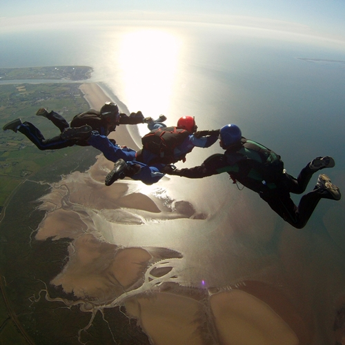

Windtunnel Group Flying
Team QFX organises regular (around once a month) freefly coaching and tunnel scrambles events at our sponsor's Airkix windtunnels.This is a great opportunity to start flying with other people in the tunnel, learn VFS, meet other people and split the cost of tunnel time. We try to find partners for flyers of all ability, so you can come on your own. The minimum requirement is that you are able to sitfly withother people in the tunnel, or be able to fly head down with other people if you want to learn VFS.More information on our facebook page.
If you are not quite at this level, we also offer one-on-one coaching (see below).


Individual Coaching
Team QFX members offer individual freefly and FS coaching both in wind tunnels and in the sky. Whether you are interested in progressing towards flying VFS, hoping to get signed-off Head Down or sit flying in the tunnel, progressing towards FS1, FF1, FF2 or starting an FS/VFS team, we will be able to speed you through it through one-on-one coaching in the tunnel or at the dropzone.If interested, drop us an email at teamqfx (at) gmail.com
Large Freefly Events
Team QFX members have been involved in the UK women's Head Down formation record and the UK head-up record as well as 20-way large head down formation training events for the UK Head Down record. Team members can also be found freefly organising at boogies and other skydiving events at dropzones all over Europe.Stay tuned with what is coming up on our facebook page.

